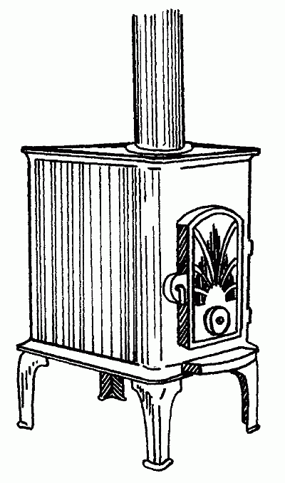

Печи-камины.

Печь-камин – это напольная стальная или чугунная печь, устанавливаемая в помещении. Своим внешним видом и способом установки она напоминает буржуйку начала ХХ века (рис. 10).

Рис. 10. Чугунная печь-камин
От обычной комнатной чугунной печки печи-камины отличаются тем, что в топочной дверце имеется окно, позволяющее наблюдать за открытым пламенем.
Дверцы могут быть как со стеклом, так и без него. Стекла дверец выполняются из исключительно устойчивой к воздействию высоких температур кристаллокерамики.
Печи-камины в состоянии обогревать помещения от 20 до 200 м2
В качестве топлива в печах-каминах используются дрова и легкий уголь.
Особенности печей-каминовСовременные печи-камины соответствуют требованиям современного дизайна – чугунное литье таких печей выполняется на высоком уровне. Для увеличения поверхности, отдающей тепло, литье украшается рельефными узорами.
Почти во всех печах применены конструктивные решения, защищающие поверхность стекла от копоти и осаждения нагара. Стеклянные окошки таких печей остаются всегда чистыми и не требуют ухода, избавляя своих владельцев от неприятной процедуры удаления копоти.
Некоторые модели имеют очень высокий КПД – до 60–72%. Для достижения такого показателя печи снабжаются шамотной футеровкой и регулировкой подачи воздуха, что позволяет регулировать интенсивность горения и увеличивать время сжигания одной закладки дров до 8–12 часов.
В последних моделях печей стали применять второй круг дожигания отходящих газов, что обеспечивает не только значительное повышение их КПД, но и экологически безопасное сжигание топлива. В этом случае отходящие газы сначала нагреваются, а затем возвращаются в камеру сгорания. В результате этого следует их повторное воспламенение, что обеспечивает практически полное сгорание дымовых газов.
Ряд моделей имеет дополнительные функциональные свойства – плиту для приготовления пищи, регулировку по высоте над полом и снабжаются специальной подставкой из теплоизоляционного материала.
Требования по установкеЕсли для установки в помещении камина требуется постройка прямого широкого кирпичного дымохода, то требованием для установки печи-камина нужен дымоход диаметром всего 125–150 мм.
Дымоход для печей-каминов можно сделать из специальных гофрированных газоходов, которые дают определенные преимущества при их прокладке и сейчас широко предлагаются на рынке.
Поскольку стены печей при работе имеют высокую температуру и могут стать источником возгорания, их следует устанавливать на расстоянии от стен и мебели.
Идеальное решение – обустройство специально выделенного для печи места, отделанного кирпичом, камнем, керамикой. Так же нужно обустроить и площадку пола, на которой будет стоять печь.